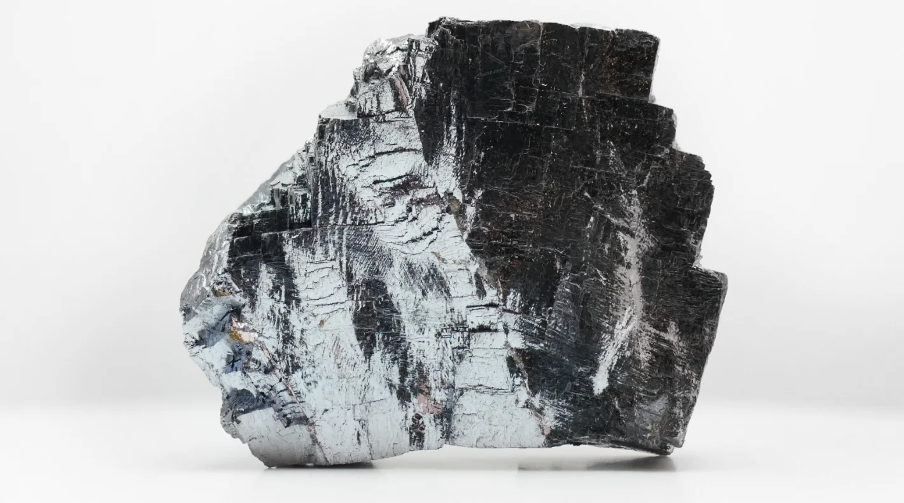
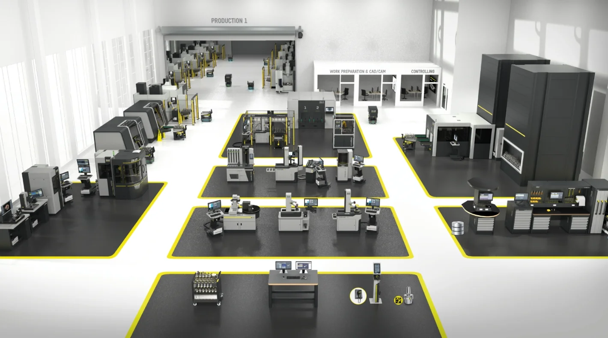
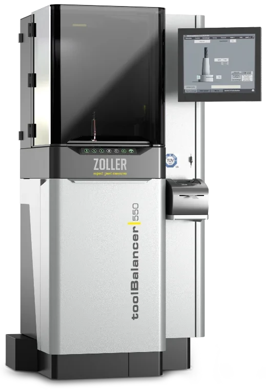
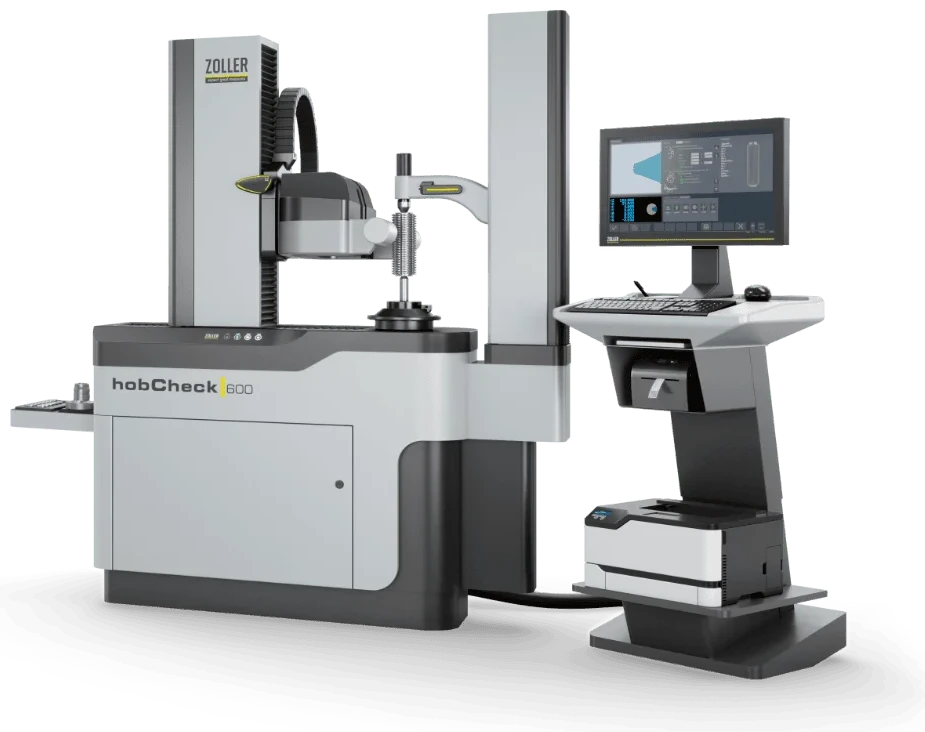
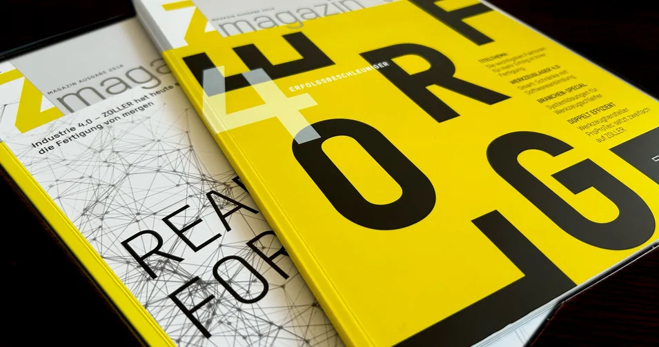

Herramientas de metal duro integral: cómo hacer frente a la subida repentina del precio del tungsteno
Hay dos estrategias que ayudan a contrarrestar el aumento extremo de los precios de las herramientas de metal duro integral: una mayor eficiencia en el uso de las herramientas y la máxima precisión en los procesos de reafilado. ZOLLER cuenta con las soluciones adecuadas para ambas: tecnología de medición, tecnología de inspección y gestión digital de herramientas.
Quien en este momento ordene herramientas de metal duro macizo en Alemania no puede creer lo que ve. Si en octubre de 2025 las barras de metal duro sin recubrimiento costaban alrededor de 30 euros por kilogramo, en mayo de 2026 el precio se estabilizó entre 200 y 240 euros por kilogramo. Un aumento de precios del 800 por ciento en siete meses. Otros mercados también se vieron duramente afectados, con aumentos de precios de entre el 300 y el 500 por ciento.

Tungsteno: sube el precio de esta importante materia prima
El factor que impulsa los precios es bien conocido: el elemento tungsteno. El tungsteno es indispensable para las herramientas de metal duro, sobre todo por su punto de fusión de 3422 °C; ningún otro elemento soporta más calor. En las herramientas, el tungsteno se presenta en forma de carburo de tungsteno. El indicador clave en el mercado internacional de precios es el producto intermedio paratungstato de amonio (APT). En octubre de 2025, el precio rondaba los 580 euros por cada diez kilogramos (lo que equivale a una unidad de tonelada métrica, MTU). Hasta principios de junio de 2026, el precio se disparó a unos 2560 euros. Según los expertos, la situación de los precios cambiará poco a mediano plazo.
El principal proveedor es China. El 80 por ciento de los yacimientos de tungsteno y la mayor parte de la infraestructura de procesamiento se encuentran allí. A principios de 2026, este gigante de los recursos limitó la exportación de tungsteno, lo que desató la alarma en el mercado mundial.
Potencial limitado de reciclaje
No existe ningún material que pueda asumir el papel del tungsteno en las herramientas de metal duro, ni el reciclaje de herramientas ofrece suficiente potencial para compensar el déficit de suministro. Según cifras de la Comisión de la UE del año 2023, la tasa de reciclaje del tungsteno era entonces del 42 por ciento. Según declaraciones recientes de la Asociación Europea de Herramientas de Corte (ECTA), las instalaciones disponibles están prácticamente a plena capacidad. El ciclo está al límite.
Donde se pierde mucho dinero: la preparación de herramientas
Las plantas de fabricación no tienen muchas opciones de acción. Aumentar la eficiencia de las herramientas es una de las más importantes. Esto significa: reducir el desgaste de las herramientas y aprovechar al máximo su vida útil. De este modo, la preparación de herramientas cobra mayor importancia como medida estratégica para contener los costos. Antes, los pequeños descuidos en el manejo de las herramientas apenas tenían importancia. En 2026, todo será diferente. La vida útil se ha vuelto demasiado valiosa como para desperdiciarla.

El ajuste, la medición y el equilibrado aumentan la vida útil
La vida útil de las herramientas está indisolublemente ligada a datos de medición precisos sobre la geometría de la herramienta y el desequilibrio. Se ha demostrado que los filos de las herramientas resisten por más tiempo las cargas durante el proceso de fabricación cuando la herramienta y la máquina CNC están coordinadas mediante datos geométricos.
Los equipos de ajuste y medición como »smile« y »venturion« de ZOLLER recogen datos exhaustivos, con precisión de micrometros, sobre la concentricidad, la longitud de sujeción y las geometrías de una herramienta. De esta manera, una máquina CNC fabrica con mucha mayor precisión y con menor desgaste de las herramientas. Los equipos de ajuste y medición de ZOLLER están diseñados para transmitir los datos de manera automatizada y adaptada al control a la máquina CNC. Sin errores, sin pérdidas de eficiencia.
Quien además integre el equilibrado de herramientas en la preparación de las mismas, obtendrá una mayor vida útil. El equilibrado reduce el desgaste en los filos de corte y, además, alivia la carga sobre los costosos husillos de la máquina. La experiencia de los clientes de ZOLLER demuestra que, de esta manera, es posible duplicar la vida útil. Los »toolBalancer« de ZOLLER se encargan de esta tarea de precisión con resultados de equilibrado < 0,4 gmm.
Administración de la vida útil en la gestión digital de herramientas
En la gestión moderna de herramientas, la vida útil es un componente importante de cada registro de datos de herramienta. Solo quien conoce la vida útil puede aprovecharla al máximo. La limitación suele estar en los sistemas de gestión de herramientas, ya que muchas soluciones no pueden actualizar automáticamente la vida útil restante. Por lo tanto, falta la base de datos necesaria para una mayor eficiencia de las herramientas.
Las soluciones TMS (Tool Management Solutions) de ZOLLER pueden leer automáticamente la vida útil restante desde la máquina CNC y almacenarla en el registro de datos correspondiente de la herramienta. Estos datos permiten seleccionar con precisión las herramientas para un ciclo de producción y utilizarlas hasta su límite técnico. Con el monitoreo continuo de la vida útil, evita descartar herramientas prematuramente o sobreutilizarlas más allá de su vida útil.
El almacén de herramientas: una fuente de gastos
Cuando los precios de las herramientas son elevados, es importante mantener otros factores de costo lo más bajos posible. Entre ellos se incluyen los tiempos improductivos de búsqueda en el almacén de herramientas. Cada minuto de búsqueda retrasa los cambios rápidos de herramientas y prolonga las costosas paradas de la máquina. Estos gastos innecesarios se pueden evitar fácilmente. La combinación de TMS Tool Management Solutions y los gabinetes para herramientas de ZOLLER, los Smart Cabinets, mantiene el orden en el almacén de herramientas. Usted selecciona específicamente las herramientas adecuadas y tiene acceso inmediato a ellas sin tener que perder tiempo buscándolas. Los procesos eficientes en el almacén de herramientas mantienen los costos bajo control.
Decidir con seguridad: ¿reafilar las herramientas o retirarlas de servicio?
Quien conoce con precisión el desgaste de una herramienta puede decidir con confianza sobre el escenario de fin de vida útil. Los equipos de prueba de la serie »pomBasic« de ZOLLER, que se pueden utilizar cerca del proceso, simplifican la decisión. En pocos segundos, los equipos registran más de 70 parámetros de la herramienta y proporcionan información clara sobre cuál es la opción correcta: reafilar o descartar.
Prueba de desgaste pronto también con un dispositivo de ajuste y medición
Analizar el desgaste de las herramientas basándose en datos es hoy más importante que nunca. ZOLLER ha reconocido esta necesidad y pronto permitirá realizar pruebas de desgaste significativas con los dispositivos de ajuste y medición »smile« o »venturion«. La próxima actualización de software incluirá la función »wearCheck«. También se beneficiarán los equipos especiales como el »hobCheck«. De esta manera, después de la actualización, no solo podrá medir las herramientas de dentado, sino también verificar su desgaste.

Talleres de rectificado: fundamentales para ciclos eficientes de herramientas
Muchos filos de herramientas pueden reacondicionarse después de su uso en la producción. El éxito de este proceso depende del trabajo de precisión que realizan las empresas de rectificado. ZOLLER también cuenta con los productos adecuados para los desafíos que plantea el «reafilado». Con »pomBasic«, los talleres de rectificado pueden verificar los resultados de rectificado directamente en la máquina, cerca del proceso, y hacer que los datos de corrección se transfieran a la máquina CNC.
Una de las opciones más completas para la inspección del desgaste es la máquina de medición »edgeControl«. Esta crea de manera totalmente automática un modelo 3D del filo de corte y lo analiza por completo. Para las empresas de rectificado que buscan el máximo rendimiento, es un equipo especializado indispensable.
El tungsteno no es un caso aislado
En el mercado mundial de metales relevantes para herramientas hay otros actores que influyen en los precios. Dos ejemplos: el cobalto y el molibdeno. El cobalto se ha encarecido alrededor de un 65 por ciento en comparación con el año anterior. Aquí también hay un productor principal, la República Democrática del Congo, con una participación de mercado de poco más del 70 por ciento. El precio del molibdeno subió alrededor de un 25 por ciento en los últimos doce meses y se mantiene estable.
Por lo tanto, la situación en el sector del metal duro sigue siendo compleja. La herramienta más poderosa con la que cuentan los fabricantes es aprovechar al máximo todo el potencial de las herramientas.
»smile«
Los dispositivos básicos robustos y con precisión de µm para herramientas estándar.

»venturion«
Excelente posición y medición de herramientas con numerosas opciones.

»toolBalancer«
El sistema de equilibrado con tecnología de vanguardia y diseño ergonómico

»pomBasic«
Comprobar más de 70 parámetros en la herramienta durante el proceso

»hobCheck«
Más de 200 valores de medición con cámara de luz transmitida y cámara de luz incidente, así como con pulsador de medición.

»TMS Core«
El punto de partida ideal para la organización digital de herramientas


1:1 Charla con expertos
Intercambio personalizado sobre sus objetivos y nuestras ideas al respecto. El asesoramiento en línea de ZOLLER directamente desde la Smart Factory. Concierte ahora su cita.
Más información

Medios: ZOLLER en detalle
Aquí encontrará comunicados de prensa, anuncios de productos, participaciones en ferias, reportajes de prensa de revistas especializadas, el archivo de noticias y nuestras personas de contacto para los medios de comunicación.
Más información